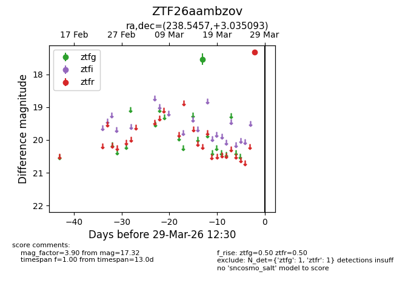
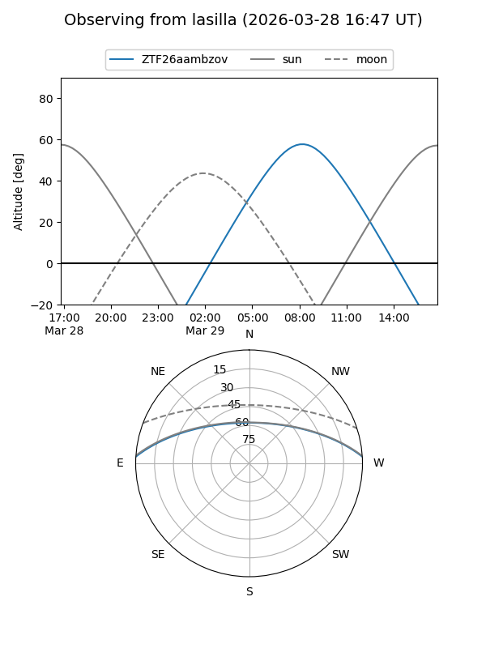
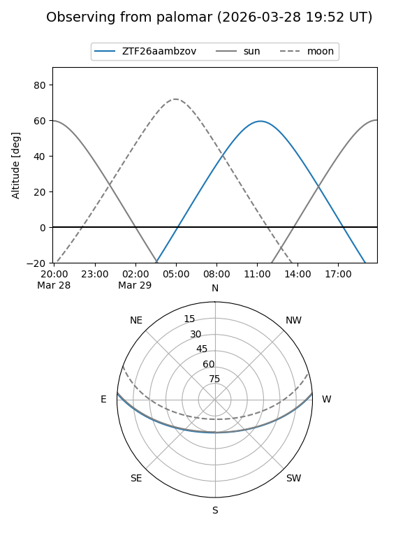

ZTF26aambzov
Target ZTF26aambzov at 2026-03-29 12:33
Aliases and brokers:
FINK: link
Lasair: link
ALeRCE: link
alt names
ZTF26aambzov (ztf,fink_ztf)
Coordinates:
equatorial (ra, dec) = 238.5457,+3.03509
equatorial (HMS+DMS) = 15:54:10.98,+03:02:06.34
galactic (l, b) = (12.1632,+40.16605)
Flags:
Photometry:
last ztfg=17.54, ztfr=17.32
1 ztfg, 1 ztfr detections
Lightcurve

Visibility


Additional plots